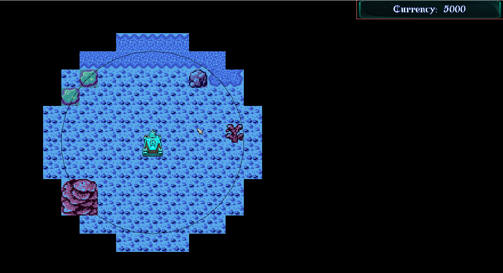
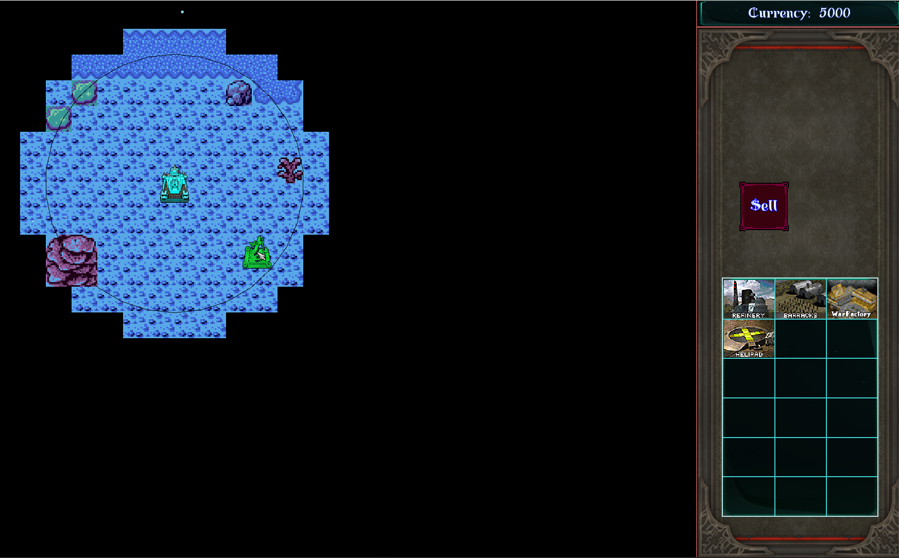

How does the game-play
Beginning
The player starts off with 1 building (Headquarters), you can see only a small area which is only around your base this is called "Fog of war" you either expand by adding buildings or make a unit to go explore it to see more of the map. Left click on that building opens a GUI panel on the right side, from there you can select which building the player would like to select, a ghost of that building shall appear on the mouse position. It would be either red or green which tells if the player is allowed to build. To confirm the building placement you need to right click to place it down.
The player can sell the building to gain money from the GUI panel except the main building (the one the player starts with).
The currency is used for creating buildings and Units.
There are 4 building typs:
Refinery - This is how the player gets money it spawns a unit called Harvester after it finishes collecting it will bring back to Refinery building to deposit.
Barracks - This building spawns infantry soldiers, there are multple enititys in that 1 unit.
WarFactory - Can create vehicles such as tanks, buggys.
AirCraft - Can create air units such as helicopters.